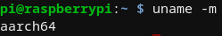

Here are the compiled versions of m-wallet and magid for aarch64.
m-wallet is the GUI version of the wallet, and magid is the console-based one.
If you would prefer to use git, a repository with the files is available at https://github.com/Arkanic/m-wallet-compiled-aarch64
The wallet is a modified version of the most recent version as of 26/apr/2021 which was built by Ruckard to support aarch64.
These binaries are only executable if the archetecture of your system is aarch64.
To check what arch you are using, run the following command:
uname -m
If the command gives you the result "armv7l", and you are using the raspbian operating system (e.g. Raspberry Pi 4), you will need to turn on 64 bit mode for your pi.
To do so, run the following command:
sudo nano /boot/config.txt
(you can use any editing tool of your choice, if you wish).
Now that you are editing the file, append this section of text to the bottom of the file:
arm_64bit=1
Save the file, and then reboot your machine by running the following command:
sudo reboot now
Now when you run uname -m again, you should see the following results:
simply run ./m-wallet or ./magid in the folder that the files are stored at. If you get a permission denied error, run chmod a+x [filename]